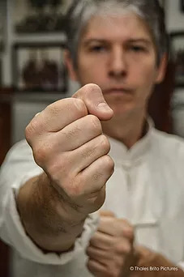

Sifu Thomas Pinheiro na Venezuela
Por Thomas Pinheiro
Em novembro de 2008, desembarcando no aeroporto internacional de Caracas (Venezuela), com clima quente e céu encoberto, estava sendo recebido por Francisco Salvador e seu aluno de jiujitsu, Gerardo, no saguão de desembarque. Até então, apenas contatado uma vez através de telefone e alguns e-mails, sob a possível estada e treinamento de wing chun.
Meu conhecimento sobre a cidade e o país era praticamente zero e sobre a pessoa de Francisco apenas tinha referencias sobre ser a pessoa que introduziu o jiujitsu brasileiro na Venezuela. Indicado a Francisco por pessoa em comum, um ex aluno meu que não se adaptou no wing chun e que fora treinar jiu jitsu e é atualmente lutador do UFC.
A adptação ao clima, temperatura, idioma e alimentação foram bem tranquilas, assim como a recepção de Francisco, que mais parecia um brasileiro, brincalhão mas ao mesmo tempo uma pessoa séria e determinada. Conhecendo-o melhor, pude saber que era um mestre de jiujitsu brasileiro, de alto nível, com mais de 18 anos de jiujitsu brasileiro (faixa preta formado pelo mestre Fábio Gurgel), faixa preta de karate shotokan, praticou boxe, foi lutador de vale tudo com cartel de 11 lutas invicto, criador e apresentador de um programa de artes marciais na Venezuela por sete anos, cursou treinamento de segurança de Krav Magá em Israel.
Atualmente empresário muito bem sucedido na área de segurança. A pergunta que eu mesmo me fazia era qual sua intenção de aprender e qual seria sua possibilidade em pegar as técnicas e como seria sua determinação para o wing chun kuen, pois não é comum alguém com alto nível em outra arte marcial se interessar por outro estílo de combate, sem falar na humildade de querer aprender algo novo.
Francisco Salvador me contara que devido as suas lutas de vale tudo, mesmo ganhando de seus oponentes havia tido lesões que o prejudicara fisicamente, e também estava muito chateado com o lado burocrático marcial na Venezuela (algo muito parecido com o que enfrentamos também no Brasil).
Seu jiujitsu é de alto nível técnico e prático, o qual confia plenamente, porém sempre havia lido sobre wing chun e estava curioso sobre o estilo chinês, interessado muito por pregar aplicação direta, objetiva e funcional, e que estivesse possível para prática sem maiores problemas na questão física, e que tecnicamente poderia também aliar a seu jiujitsu. Chamou muito a atenção também o fato de não necessitar de área específica de treino, nem vestimentas específicas.
Francamente meu interesse estava muito além de ensinar apenas pelo lado financeiro, seria ensinar alguém que está interessado em aprender, e em se tratando de um expert marcial, e de outro país, se tornou mais interessante, um ótimo desafio. Por casualidade ou por ter sido um momento certo, estava lá. Em trinta e dois dias de estada, foram trinta dias de treinos, divididos em dois turnos de uma hora e meia cada, baseados no primeiro nível, siu lim tao.
Forçando técnicas e exercícios básicos, aliados a deslocamentos, giros, aplicações e exercícios de sensibilidade, foco, velocidade, potência, explosão. Inicialmente o treino iniciou com Francisco Salvador, mas ao final da temporada estavam mais três pessoas (todos com experiência marcial, fosse jiujitsu, boxe, karatê, aikido ou taekwondo) e o grupo inicial de wing chun em Caracas formou-se.
Pela assiduidade, volume de treino e assimilação das técnicas, Francisco Salvador assumiu o papel de aluno mais avançado no grupo. Suas intenções em relação a treino e prática se encontraram perfeitamente com minhas ideias. Além do treino formal de wing chun, também tive o prazer de dar aulas para um grupo de seguranças entre os quais incluia um russo, Victor, que havia feito lutas no Brasil, participado no jungle fight em Manaus, um excelente lutador.
Uma experiencia muito gratificante, pois o chefe da segurança, que também já treinara full contact, e participara de treinamentos de táticas de combate(tiro) na América Central, também gostou muito ao ver as técnicas de wing chun aplicadas em situações reais.
O resultado foi o melhor possível, tanto no aspecto técnico, como pela amizade estabelecida. Mais do que cerimoniais, papéis, certificados ou trocas de favores, é fundamental caráter, confiança, educação, e respeito entre praticantes sérios de arte marcial. São pilares que se conquistam, não são comprados ou obtidos com programas de marketing.